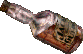
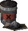
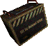

Category:Resources
Description
There are several resources in FOnline 2, used for the creation of guns, armors, ammunition, drugs and everything else you need. We can divide them into three groups: common resources, rare resources and tier 4 crafting components (aka ultra rare resources).
Common Resources
These are the main resources needed for all craftable items. They are quite easy to get.
Broc Flower
| The plentiful flower that forms the base for the powder of healing. | |
|---|---|
| Weight | 0g |
| Base Price | 1 |
| Where to Find? | |
| Notes | Used in creation of drugs...or for THIS and offcourse FOR THIS. |
Cord

| |
|---|---|
| Trimming made of multiple strands of yarn attached together. | |
| Weight | 0g |
| Base Price | 8 |
| Where to Find? | |
| Notes | Used in creation of armors. Valuable and important resource. |
Empty Hypodermic
Fire Gecko Pelt
| This is the dried and cured hide of a Fire Gecko. | |
|---|---|
| Weight | 1600g |
| Base Price | 350 |
| Where to Find? | |
| Notes | In order to skin gecko corpses you need the Gecko Skinning perk. Fire Gecko pelts can be used for crafting Hubbologist's Robes or sold for 350 caps in Modoc Tannery (only during global buyout event). |
Firewood
| A Pile of firewood and kindling. | |
|---|---|
| Weight | 3200g |
| Base Price | 20 |
| Where to Find? | |
| Notes | In order to cut wood you can either use Hatchet or Primitive tool. Primitive tool brakes easily, so if you want to use it - take a few spares with you. |
Flint
| A stone used to sharpen weapons. | |
|---|---|
| Weight | 907g |
| Base Price | 5 |
| Where to Find? | |
| Notes | They really are hard to spot, use zoom in and just try to adjust your eyesight to weirdly looking little rocks. |
Fruit

| |
|---|---|
| A strange piece of fruit. No preservatives and no additional food coloring added. | |
| Effect | Cure few HP's |
| Weight | 453g |
| Base Price | 10 |
| Where to Find? | Wasteland encounters near trees Shops |
| Notes | Hard to spot, mostly used as an first product in chain of flamethrower ammo production. |
Gamma Gulp Beer

Gecko Pelt
| This is the dried and cured hide of a Gecko. | |
|---|---|
| Weight | 907g |
| Base Price | 100 |
| Where to Find? | |
| Notes | In order to obtain skins from bodies you need Perk Gecko Skinning. Instead of using it to craft you can also sell this skin for 40 caps in Hub(talk to Traper Gorn) or for 100 caps in Madoc Tannery. |
Golden Gecko Pelt
| This is the dried and cured hide of a Golden Gecko. | |
|---|---|
| Weight | 1850g |
| Base Price | 200 |
| Where to Find? | |
| Notes | In order to obtain skins from bodies you need Perk Gecko Skinning. Instead of using it to craft you can also sell this skin for 80 caps in Hub(talk to Traper Gorn) or for 200 caps in Madoc Tannery. |
Gunpowder

| |
|---|---|
| A Box with black powder. | |
| Weight | 500g |
| Base Price | 50 |
| Where to Find? | 2x Into . Into .You`ll gain 20 exp in the process. |
| Notes | Most basic and essential material for crafting any ballistic ammunition. You can craft it from mined minerals, or by dismantling bullets. How come no one has ever lost fingers while doing the latter - it is one of many wasteland mysteries. |
Junk

| |
|---|---|
| A pile of junk parts. A little bit of everything. | |
| Weight | 2600g |
| Base Price | 400 |
| Where to Find? | |
| Notes | Required by a lot of guns and ammunition. It's heavy but it's worth collecting anytime you notice a source while farming or doing any other business. |
Metal Parts

Microcircuits

| |
|---|---|
| Miscellaneous computer parts with various functions. A computer geek's dream. | |
| Weight | 453g |
| Base Price | 100 |
| Where to Find? | |
| Notes | Mostly useful in creation of energy guns, but also required to craft some of the big guns, like Avenger Miniguns. |
Minerals
|
| |
|---|---|
| A hard nature formation. Contains various useless and useful substances. | |
| Weight | 2000g |
| Base Price | 10 |
| Where to Find? | |
| Notes | Boring grind, or a unique chance to roleplay a post-apocalyptic miner. Where's the fun in hitting the rock, if it doesn't try to hit you back? Find out for yourself!
|
Ore
Roentgen Rum

Rot Gut
|  | |
|---|---|
| A very strong liquor, a cleaning fluid, or fuel for your car, you decide. | |
| Effect | -2 to PE for 30 min |
| Weight | 0g |
| Base Price | 20 |
| Exp for Crafting | 40 |
| Requirments to craft | 5x1x Crafts a bath of 5. |
| Notes | Used in crafting of Molotov Coctails and Flamethrower ammo. |
Scorpion Tail

| |
|---|---|
| The served tail of a radscorpion. | |
| Weight | 5071g |
| Base Price | 10 |
| Where to Find? | |
| Notes | Poison Antidote can be made with those. |
Tanned brahmin hide

| |
|---|---|
| Brahmin hide, the best you'll find anywhere in the wasteland, high quality, tanned material. | |
| Weight | 2870g |
| Base Price | 100 |
| Where to Find? | |
| Notes | Very important resource, necessary to craft armors. Just don't ask how the hell brahmin can walk having their hides already tanned. It is one of those wasteland mysteries. |
Tobacco
| Some sort of plant leaves, looks like tobacco. | |
|---|---|
| Weight | 0g |
| Base Price | 30 |
| Where to Find? | |
| Notes | Only a few wastelanders use tabacco to produce cigarettes, in most cases it is abused for decorative purposes. |
Torn Paper
| Part of paper witch by the looks have been torn off somewhere. | |
|---|---|
| Weight | 0g |
| Base Price | 1 |
| Where to Find? | |
| Notes | Only an Enclave soldier woud be silly enough to scavange for it. Cigarattes are easily obtainable in multiple other ways, and crafting them is the slowest possibility. |
Tube
| Tube has been always looking like a tube. Steel and hollow inside. | |
|---|---|
| Weight | 1200g |
| Base Price | 5 |
| Where to Find? | |
| Notes | Tubes are used mostly in production of guns. |
Xander Root

| |
|---|---|
| The rare root that gives healing properties to the powder of healing. | |
| Weight | 1200g |
| Base Price | 2 |
| Where to Find? | |
| Notes | Used in creation of drugs. |

{kind=link}
{kind=link}
Â
Rare Resources
To obtain this resources you need to buy them via dialog with various merchants scattered through the wasteland or search for them in hard dungeons or in general have way more troubles in obtaining them than in first case.
Energy Transformer

| |
|---|---|
| Power converter, used to transfer electricity through circuits. | |
| Weight | 453g |
| Base Price | 600 |
| Where to Find? | |
| Notes | Price in San Francisco - 1000 caps Price in Vault City - 1500 caps |
Chemical Components
|  | |
|---|---|
| Various chemical components of unknow origin, most probably ingredients for drugs, medicine. | |
| Weight | 332g |
| Base Price | 120 |
| Where to Find? | |
| Notes | Price in San Francisco - 200 caps Price in The Hub - 300 caps |
High Grade Steel
| The usual stainless high durability steel, though this metal seems to be of a much higher quality. | |
|---|---|
| Weight | 480g |
| Base Price | 600 |
| Where to Find? | |
| Notes | Price in Redding - 1000 caps Price at Gun Runners - 1500 caps |
Kevlar Polymer
| Synthetic fiber of a kind, very high strength, used in composite materials. | |
|---|---|
| Weight | 240g |
| Base Price | 300 |
| Where to Find? | |
| Notes | Price in Gecko - 500 caps Price in NCR - 750 caps |
Refined Uranium Ore
| A chunk of Uranium Ore. This ore seems to have been processed somehow. It seems heavier. | |
|---|---|
| Damage | 4 - 9(Throwing) 6 - 9(Punching) |
| Throw | AP: 4 |
| Punch | AP: 3 |
| Range | 8(When Throwing) |
| Damage type | Normal |
| Weapon Perk | None |
| Strength required | N/A |
| Weight | 420 grams |
| Base price | 120 caps |
| Where to Find? | |
| Notes | Something tells me that if you`re bashing your opponents with this you`re doing it wrong. Price in Broken Hills - 200 caps |
Â
Tier 4 Crafting Components
Yep, those are really rare. Consider yourself lucky if you ever find one as every one of them is worth a lot of caps for players wishing to complete a tier 4 weaponry or a Power Armor.
Advanced Power Armor Manual
| A technical repair manual on the Advanced Power Armor. | |
|---|---|
| Weight | 957g |
| Base Price | 1500 |
| Where to Find? | * Enclave Supply (Event) |
| Notes | This is very rare crafting component necessary in the process of crafting Advanced Power Armor. Ultra rare. |
Advanced Power Armor Shell

| |
|---|---|
| No Description yet, lazy, lazy deves! | |
| Weight | Around 30kg |
| Base Price | 15000 |
| Where to Find? | * Enclave Supply (Event) |
| Notes | This is very rare crafting component necessary in the process of crafting Advanced Power Armor. Ultra rare. |
Bolt Assist Mechanism
| No Description yet, lazy, lazy deves! | |
|---|---|
| Weight | 170g |
| Base Price | 500 |
| Where to Find? | * Enclave Supply (Event) *Glow *Ares *Ambushed Convoy *Sierra Caves Complex *Sierra Control |
| Notes | If you want to craft G11 or Gauss Rifle you need this part. |
Electronic Firing Mechanism
| No Description yet, lazy, lazy deves! | |
|---|---|
| Weight | 270g |
| Base Price | 550 |
| Where to Find? | * Enclave Supply (Event) *Glow *Ares *Ambushed Convoy *Sierra Caves Complex *Sierra Control |
| Notes | If you want to craft G11E or Gauss Pistol you need this part. |
Emission Concentrator
| No Description yet, lazy, lazy devs! | |
|---|---|
| Weight | 570g |
| Base Price | 725 |
| Where to Find? | * Enclave Supply (Event) *Glow *Ares *Ambushed Convoy *Sierra Caves Complex *Sierra Control *Toxic Caves |
| Notes | If you want to craft Pulse Rifle or Gatling Laser you need this part. |
HiFlo Hydraulic Systems
| This system is responsible for the Power Armor's strenght augmentation, allowing the user to relatively unhindered movement considering the armors weight and size. | |
|---|---|
| Weight | 2011g |
| Base Price | 1000 |
| Where to Find? | * Enclave Supply (Event) *Glow *Ares *Ambushed Convoy *Sierra Caves Complex *Sierra Control |
| Notes | This is very rare crafting component necessary in the process of crafting Power Armor. |
Improved Servomotors
| No Description yet, lazy, lazy deves! | |
|---|---|
| Weight | Around 1kg |
| Base Price | 2100 |
| Where to Find? | * Enclave Supply (Event) |
| Notes | This is very rare crafting component necessary in the process of crafting Advanced Power Armor. I don't think there's even one copy of this item in the server yet. |
Particle Accelerator
| No Description yet, lazy, lazy deves! | |
|---|---|
| Weight | 600g |
| Base Price | 750 |
| Where to Find? | * Enclave Supply (Event) *Glow *Ares *Ambushed Convoy *Sierra Caves Complex *Sierra Control |
| Notes | If you want to craft Gauss Pistol or Pulse Rifle you need this part. |
Recoil Compensator
| No Description yet, lazy, lazy deves! | |
|---|---|
| Weight | 370g |
| Base Price | 800 |
| Where to Find? | * Enclave Supply (Event) *Glow *Ares *Ambushed Convoy *Sierra Caves Complex *Sierra Control |
| Notes | If you want to craft Bozar you need this part. Watch out when trading as it's graphic is the same as the Advanced Fuel Converter's which is common and cheap item, do not get scammed! |
Rotary Chamber
| No Description yet, lazy, lazy deves! | |
|---|---|
| Weight | 570g |
| Base Price | 750 |
| Where to Find? | * Enclave Supply (Event) *Glow *Ares *Ambushed Convoy *Sierra Caves Complex *Sierra Control |
| Notes | If you want to craft G11 or Vindicator you need this part. |
T51b Power Armor Manual
| A technical repair manual on the T-51b Power Armor. | |
|---|---|
| Weight | 907g |
| Base Price | 800 |
| Where to Find? | * An Old Hospital * Guardian Of Forever |
| Notes | This is component necessary in the process of crafting Power Armor. It can be found in some of special encounters and thus its a little bit more common than other. |
T51b Power Armor Shell

| |
|---|---|
| Made of a poly-laminate composite, this shell of is relatively lightweight and capable of absorbing over 2500 Joule of kinetic impact. The 10-micron-thick silver ablative coating can reflect laser and other radiation emissions without damaging the composite subsurface | |
| Weight | 28750g |
| Base Price | 7500 |
| Where to Find? | * Enclave Supply (Event) *Glow *Ares *Ambushed Convoy *Sierra Caves Complex *Sierra Control |
| Notes | This is the main crafting component necessary in the process of crafting Power Armor. Just like any other of those is crazy rare. |
Telescopic Sights
| No Description yet, lazy, lazy deves! | |
|---|---|
| Weight | 270g |
| Base Price | 500 |
| Where to Find? | * Enclave Supply (Event) *Glow *Ares *Ambushed Convoy *Sierra Caves Complex *Sierra Control |
| Notes | If you want to craft Bozar you need this part. |
Titanium Minigun Barrels
| No Description yet, lazy, lazy deves! | |
|---|---|
| Weight | 970g |
| Base Price | 625 |
| Where to Find? | * Enclave Supply (Event) *Glow *Ares *Ambushed Convoy *Sierra Caves Complex *Sierra Control |
| Notes | If you want to craft Vindicator or Gatling Laser you need this part. |
TX-28 Micro Fusion Pack
|  | |
|---|---|
| This is a standard power unit for powered armors. Developed by West-Tek just before the Great War, it was substantial in allowing Power Armor concept to come true. The TX-28 Micro Fusion Pack is said to be cabable of operating for roughly ten thousand years. | |
| Weight | 4021g |
| Base Price | 1200 |
| Where to Find? | * Enclave Supply (Event) *Glow *Ares *Ambushed Convoy *Sierra Caves Complex *Sierra Control |
| Notes | This is very rare crafting component necessary in the process of crafting both Power Armor AND Advanced Power Armor. |
Â
Pages in category "Resources"
The following 44 pages are in this category, out of 44 total.